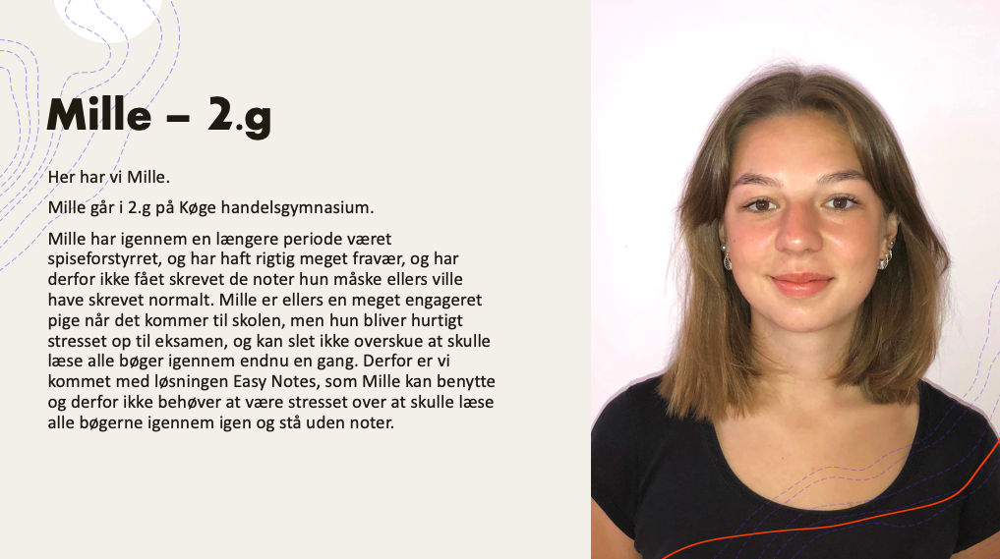
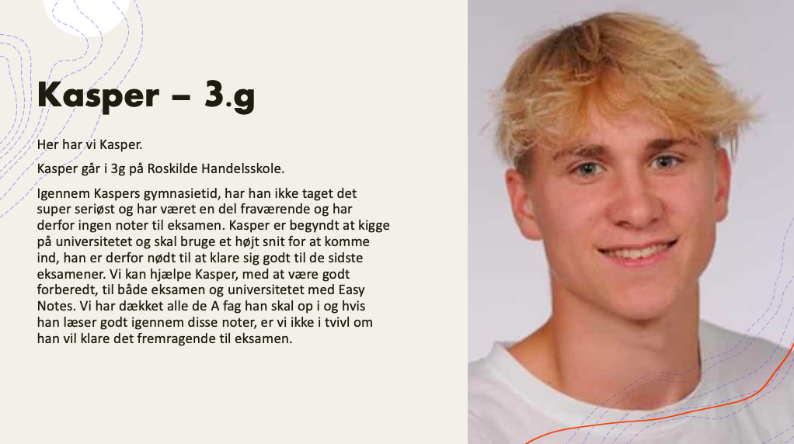

Hvorfor har vi valgt at lave easy notes og hvem kan bruge hjemmesiden?
Vi har valgt at lave en hjemmeside, fyldt med noter til alle fag du kan få på HHX. Ved at gøre dette løser vi et problem, for studerende, som snart skal op til eksamen og ikke har taget noter gennem gymnasietiden.

Vi er tre universitetsstuderende, som har gennemført en HHX og har igennem alle år fokuseret meget på overskuelige og nemt læselige noter. Vi har nu samlet alle vores gamle noter og tilpasset dem, så de er perfekte til en studerende på et handelsgymnasium i dag.
Designprincipper
Vi har valgt at holde baggrunden hvid for at hold fokus på selve noterne. (white space). Vi har valgt det det simple design, fordi den tomme plads vi har i kanterne fremhæver og skaber overblik.
Vi har mange gentagelser på vores hjemmeside, fx så går den grå farve igen, og så bliver vi ved med at vise eksempler på vore produkter.
Vi har også valgt at bruge nogle kontraster det er fx de tykke overskrifter for at rette fokuspunktet til overskriften så de kan se hvad det næste afsnit kommer til at handle om.
Vi har fået folk til at prøve selve vores hjemmeside, og der var de lidt i tvivl om hvilke noter man skulle købe hvis man f.eks. gik i 1.G og vi har derfor valgt at dele nogle af noterne op. Hvilket du kan se her oppe i toppen kan du vælge hvilke noter der passer til hvilken årgang du nu går i.